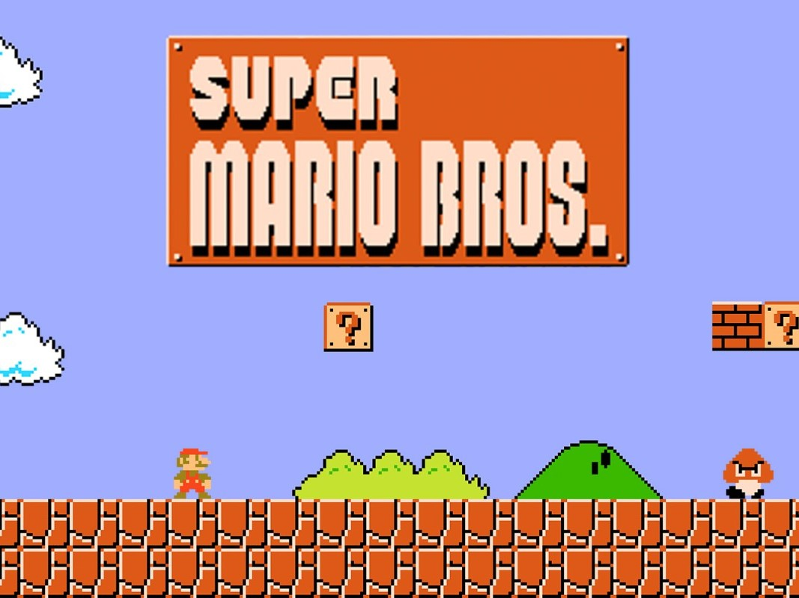

La creación del juego
Mario Bros. (マリオブラザーズ) es un videojuego de arcade desarrollado y publicado por Nintendo en 1985. Fue creado por Shigeru Miyamoto y Gunpei Yokoi, el ingeniero jefe de Nintendo. En el juego, Mario es retratado como un fontanero ítalo-estadounidense que, junto con su hermano menor Luigi, tiene que derrotar a criaturas de las alcantarillas de Nueva York. Fue la tercera aparición de Mario además de la primera aparición con su nombre definitivo.